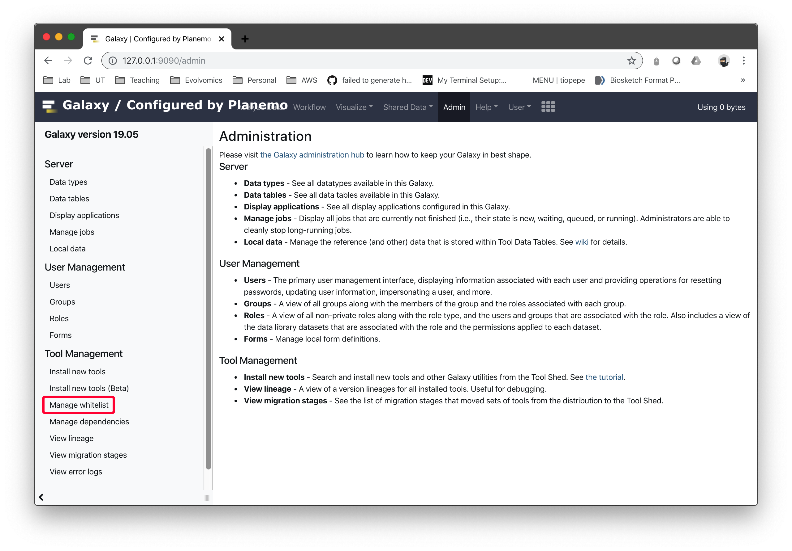
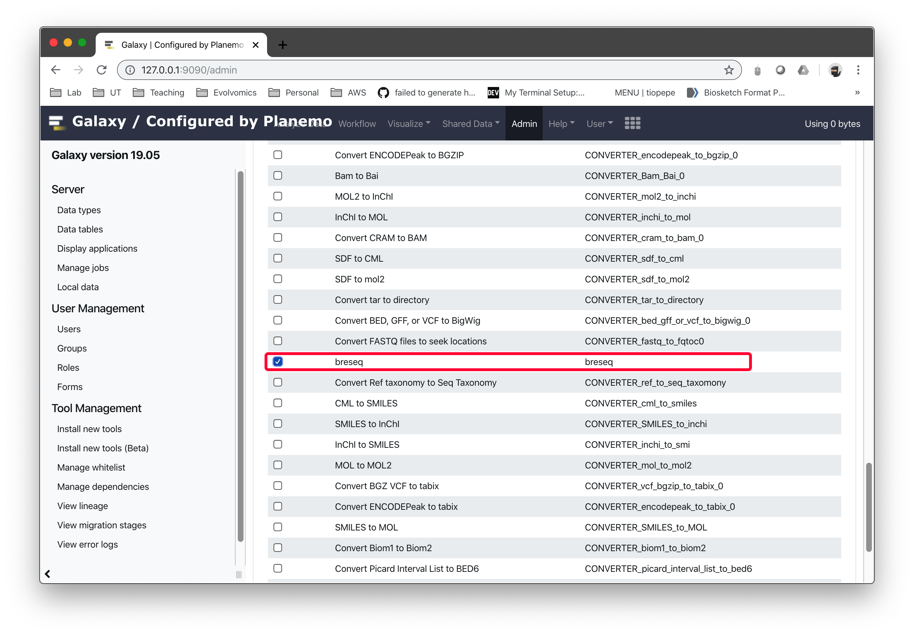

breseq is a command line tool implemented in C++ and base R. It is compatible with a variety of UNIX-like platforms, including Linux, MacOSX, and Windows Subsystem for Linux (WSL). There are several ways to install it described below.
If you are not comfortable with running commands in a terminal, it is also possible to install and use breseq on the web-based Galaxy platform (See Installing on Galaxy).
If you have limited local compute resources, you can run breseq using a cloud computing service (See Running in the cloud using Modal).
Note
If you are a developer (working on the breseq source code, you'll want to head here to the Developer page to set up your breseq install so that you can compile from the GitHub source code.
Recommended: Install using Conda¶

The recommended installation method is to use the Conda package manager to install and all of the programs it requires. Make sure you have Bioconda set up, then follow the directions for the breseq package.
Do-It-Yourself Methods¶
The most recent breseq binary distributions and source code packages are available for download from GitHub. The instructions in the following sections explain how to first install the programs breseq needs to run and then breseq itself. You can use any of the three options shown for installing executables.
For All DIY Methods: Install External Dependencies¶
breseq requires these software programs to be installed on your system:
- Bowtie2 (version 2.1.0 or higher) read mapping program
- R (version 2.1.4 or higher) statistical programming language
To install each dependency, visit the respective web pages linked above and follow the instructions for your platform. The executables for bowtie2 and R need to be in your environment's $PATH for breseq to be able to find and use them.
Note
A few older versions of bowtie2 have bugs and produce SAM output that can cause breseq to crash. If you are using one of these versions you should get an error message when you run and it will exit.
Warning
The output of breseq may vary (usually only slightly) depending on your version of bowtie2. When reporting results in a publication you should always state the version of breseq AND the version of bowtie2 that you used to ensure reproducibility! The current recommended bowtie2 version is shown in a warning at the beginning of a run if you are using a different one.
DIY Method 1. Binary Download¶
Linux and MacOSX packages with precompiled binaries (executables) are available for download.
Note
These executables may not be compatible with all operating systems/versions. If they don't function, try DIY Method 2.
You should be able to immediately run breseq from within the unarchived directory of the download.
For example, run this command to get breseq help:
bin/breseq
You may also run this command to test the breseq install:
./run_tests.sh
Note
If you relocate the executable files in the bin directory, then you must also relocate the files in the share directory to the same location relative to the binaries (e.g., bin/../share/breseq).
DIY Method 2. Source Code Download¶
breseq installation from the source code requires some basic familiarity with UNIX commands and environments.
In addition to the normal dependencies, you must also have a C++ compiler installed on your system. For example: GCC.
Tip
MacOSX does not have a C++ compiler installed by default. One method to get one is to download and install the Apple Developer tools (available from the App store). Be sure that you also complete any additional steps that are necessary to install the "command-line tools".
If you have admin privileges and want to install in a standard location accessible to all users of a computer, then see installing-in-a-system-wide-location. If you do not have admin
privileges on your computer, then see installing-in-the-source-directory or installing-in-a-custom-location.
Installing in a system-wide location¶
This method requires that you have admin privileges on your machine. After installation, all users of the machine will be able to run breseq.
Open a terminal window and change directory to the root of the source distribution. Then, run these commands:
$ ./configure
$ make
$ make test
$ sudo make install
make test is optional, but recommended. It should take less than 5 minutes to run and report success at the end if everything is operating correctly.
Installing in the source directory¶
This is the most robust way to compile and install breseq if you do not have admin privileges on a system. All of the compiled programs and libraries will be self-contained in the original source tree.
Open a terminal window and change directory to the root of the source distribution. Then, run these commands:
./configure --prefix=${PWD}
make
make test
make install
After installation, if you want to be able to call breseq commands without specifying the entire path to them, you will need to add the newly created "bin" directory within the source to your $PATH.
For a bash shell you can usually use a command like this:
echo "export PATH=\$PATH:${PWD}/bin" >> ~/.bashrc
But the exact way to do this may depend on your system. Once you open a new terminal window so that it registers this change to your $PATH, you should be able to invoke commands.
Installing in a custom location¶
We'll assume that you've chosen to install in /mnt/home/me/local. Open a terminal window and change directory to the root of the source distribution. Then, run these commands:
./configure --prefix=/mnt/home/me/local
make
make test
make install
This will create a usual UNIX grouping of program directories (with sub-directories like bin, lib, man, etc).
After installation, if you want to be able to call breseq commands without specifying the entire path to them, you will need to add the newly created bin directory to your $PATH.
For a bash shell you can usually use a command like this:
echo "export PATH=\$PATH:/mnt/home/me/local/bin" >> ~/.bashrc
But the exact way to do this may depend on your system. You may also want to similarly update your $MANPATH, $CPPFLAGS, $LD_FLAGS, etc. Now you should be able to invoke commands once you open a new terminal window.
DIY Method 3. GitHub source code¶
If you are working with the latest source code cloned from the GitHub code repository, then you will need to have other tools and libraries installed on your system in order to get it to compile at the command line or through the included XCode project.
See the Developer documentation for instructions.
Installing on Windows (using WSL)¶
Download and install Windows Subsystem for Linux (WSL) on your machine. In the WSL terminal, you should be able to use any of the methods described above for breseq installation. For example, you can install Conda and then use it to install breseq.
Installing on Galaxy¶
If you administer a Galaxy server, is available to install from the Main Tool Shed. See also, the directions for Installing Tools into Galaxy.
If you would like to run through the Galaxy web interface on your own computer, you can follow these steps:
git clone https://github.com/galaxyproject/tools-iuc.git
- Start the local Galaxy server
cd tools-iuc/tools/breseq
planemo serve
Note
In either case, you need to go to the settings of your Galaxy install and choose to "Whitelist" so that it can return HTML output to the web browser.
 
{kind=link}
{kind=link}
Running in the cloud using Modal¶
User (@tdsone) contributed these detailed instructions for running breseq using the Modal cloud computing service. This setup can be helpful if you don't have access to enough local computing power for your breseq runs or don't want to manage the breseq install. You'll still need some command-line know-how.
Troubleshooting installation¶
If you have a problem installing , please post a detailed report as an issue on GitHub.